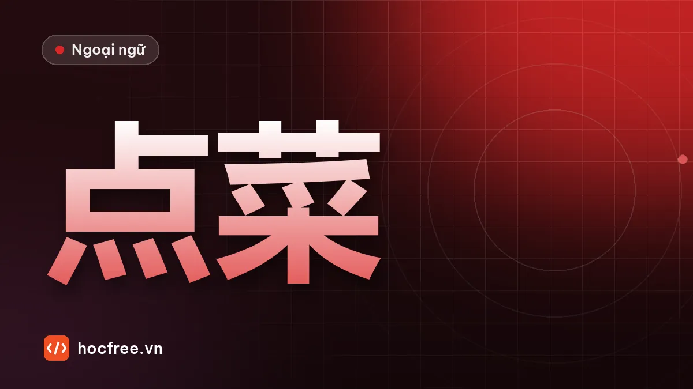

Gọi món và nói về ăn uống bằng tiếng Trung
Từ vựng món ăn, đồ uống, mẫu câu gọi món 我要, 来一个, hỏi món ngon, thanh toán, câu cầu khiến với 请 và 吧, hội thoại ở nhà hàng.

Học xong bài này, bạn sẽ
- Gọi món và đồ uống
- Dùng 请 và 吧 để mời, đề nghị
- Hỏi giá và thanh toán ở nhà hàng
Nên học trước: Mua sắm, tiền và lượng từ
Nội dung bài viết
Ăn uống là văn hóa giao tiếp quan trọng nhất của người Trung Quốc: tiếp khách, ăn với đồng nghiệp, mời đối tác. Bài này giúp bạn gọi món, mời người khác, hỏi món, đề nghị và thanh toán, kèm những từ để không gọi nhầm món cay khi bạn không ăn cay được.
Từ vựng
| Chữ Hán | Pinyin | Nghĩa | Ví dụ |
|---|---|---|---|
| 饭馆 | fànguǎn | quán ăn, nhà hàng | 这个饭馆很有名。 |
| 服务员 | fúwùyuán | nhân viên phục vụ | 服务员！ |
| 菜单 | càidān | thực đơn | 请给我菜单。 |
| 点菜 | diǎn cài | gọi món | 我们点菜吧。 |
| 米饭 | mǐfàn | cơm | 两碗米饭 |
| 面条 | miàntiáo | mì sợi | 一碗面条 |
| 碗 | wǎn | bát (lượng từ) | 一碗汤 |
| 鸡蛋 | jīdàn | trứng gà | 西红柿炒鸡蛋 |
| 牛肉 / 鸡肉 / 猪肉 | niúròu / jīròu / zhūròu | thịt bò / gà / lợn | 我不吃猪肉。 |
| 鱼 | yú | cá | 这个鱼很好吃。 |
| 汤 | tāng | canh, súp | 来一个汤。 |
| 水 | shuǐ | nước | 一瓶水 |
| 啤酒 | píjiǔ | bia | 两瓶啤酒 |
| 饿 / 渴 | è / kě | đói / khát | 我饿了。 |
| 辣 | là | cay | 不要太辣。 |
| 请 | qǐng | mời; xin vui lòng | 请坐！今天我请客。 |
| 给 | gěi | cho, đưa | 给我一杯水。 |
| 吧 | ba | nhé, đi (đề nghị) | 我们走吧。 |
| 买单 | mǎidān | tính tiền | 服务员，买单！ |
| 打包 | dǎbāo | gói mang về | 这个可以打包吗？ |
Phát âm
- 饿 è (đói) và 二 èr: chỉ khác âm cuốn lưỡi; 饿 không cuốn lưỡi.
- 辣 là thanh 4. Đừng nhầm với 拉 lā (kéo) hay 来 lái (đến).
- 米饭 mǐfàn, 啤酒 píjiǔ: nhớ nửa thanh 3 và thanh 3 cuối đọc thấp.
Ngữ pháp và mẫu câu
1. Gọi món: 我要 / 来 + số lượng
- 我要一个牛肉面。 (Tôi lấy một bát mì bò.)
- 来两瓶啤酒。 (Cho hai chai bia.) 来 trong gọi món nghĩa là "mang ra, cho", rất khẩu ngữ.
- 再来一碗米饭。 (Cho thêm một bát cơm.) 再 zài: thêm, nữa.
2. 给 + người + vật / 给 + người + động từ
给我菜单 (đưa tôi thực đơn), 我给你打电话 (tôi gọi điện cho bạn). Người nhận đứng ngay sau 给, không đặt ở cuối câu như tiếng Việt "gọi điện cho bạn".
3. 请: mời, xin vui lòng
- 请 + động từ: lịch sự đề nghị. 请坐 (mời ngồi), 请喝茶 (mời uống trà), 请等一下 (xin đợi một chút).
- 请 + người + động từ: mời ai làm gì. 我请你吃饭 (tôi mời bạn ăn cơm, tôi trả tiền). 今天我请客 (hôm nay tôi mời).
4. 吧: đề nghị, rủ rê
Thêm 吧 cuối câu để đề nghị nhẹ nhàng: 我们点菜吧 (mình gọi món đi). 你先吃吧 (bạn ăn trước đi). Khác 吗: 吗 hỏi có/không, 吧 rủ hoặc đoán.
5. Nói yêu cầu về món
- 不要太辣 / 不要辣 (đừng cay quá / không cay).
- 我不吃牛肉 (tôi không ăn thịt bò).
- 有什么好吃的？ (Có món gì ngon?) 你们这儿什么菜最好吃？ (Ở đây món nào ngon nhất?)
Hội thoại: ăn trưa với đồng nghiệp
A: 我饿了，我们去吃饭吧。
Wǒ è le, wǒmen qù chī fàn ba.
Mình đói rồi, đi ăn thôi.
B: 好啊。今天我请客！
Hǎo a. Jīntiān wǒ qǐngkè!
Được đấy. Hôm nay mình mời!
服务员: 你们好，几位？
Nǐmen hǎo, jǐ wèi?
Chào anh chị, mấy người ạ?
B: 两位。请给我们菜单。
Liǎng wèi. Qǐng gěi wǒmen càidān.
Hai người. Cho chúng tôi thực đơn.
A: 你们这儿什么菜好吃？
Nǐmen zhèr shénme cài hǎochī?
Ở đây món gì ngon ạ?
服务员: 鱼很好吃，可是有点儿辣。
Yú hěn hǎochī, kěshì yǒudiǎnr là.
Món cá rất ngon, nhưng hơi cay.
B: 来一个鱼，不要太辣。再来一个汤、两碗米饭。
Lái yí gè yú, bú yào tài là. Zài lái yí gè tāng, liǎng wǎn mǐfàn.
Cho một món cá, đừng cay quá. Thêm một canh, hai bát cơm.
服务员: 喝什么？
Hē shénme?
Uống gì ạ?
A: 两杯茶，谢谢。
Liǎng bēi chá, xièxie.
Hai cốc trà, cảm ơn.
位 wèi: lượng từ lịch sự cho người (几位 = mấy vị). 啊 a: trợ từ cảm thán làm câu thân thiện.
Văn hóa ăn uống cần biết
- Món ăn đặt chung giữa bàn, mọi người cùng gắp; gọi số món bằng hoặc nhiều hơn số người một chút.
- Người mời thường trả hết tiền; tranh trả tiền là chuyện bình thường. Câu hay nghe: 我来，我来！ (Để tôi, để tôi!)
- Khi chủ nhà gắp thức ăn cho bạn, cảm ơn: 谢谢，我自己来。 (Cảm ơn, để tôi tự gắp.)
Luyện tập
Bài 1. Điền 吗 / 吧 / 呢: (1) 你喝咖啡___？ (2) 我们走___。 (3) 我要米饭，你___？ (4) 你先吃___，我不饿。
Bài 2. Dịch: (1) Cho tôi một cốc nước. (2) Hôm nay tôi mời bạn ăn cơm. (3) Đừng cay quá. (4) Cho thêm một chai bia. (5) Tính tiền!
Bài 3. Sắp xếp: (1) 菜单 / 给 / 请 / 我 (2) 打包 / 可以 / 这个 / 吗 (3) 吃 / 我 / 牛肉 / 不
Xem đáp án
Bài 1. (1) 吗 (2) 吧 (3) 呢 (4) 吧.
Bài 2. (1) 给我一杯水。/ 请给我一杯水。 (2) 今天我请你吃饭。 (3) 不要太辣。 (4) 再来一瓶啤酒。 (5) 服务员，买单！
Bài 3. (1) 请给我菜单。 (2) 这个可以打包吗？ (3) 我不吃牛肉。
Kiểm tra cuối bài
1. 来 trong 来两瓶啤酒 nghĩa là gì?
2. "Tôi gọi điện cho bạn" nói thế nào?
3. 吧 khác 吗 ở đâu?
Xem đáp án
- Cho, mang ra (khi gọi món).
- 我给你打电话。
- 吗 hỏi có/không; 吧 dùng để đề nghị, rủ rê hoặc đoán.
Tổng kết và ôn tập
- Gọi món: 我要 / 来 + số + lượng từ + món; 再来 để gọi thêm.
- 给 + người + vật/động từ; 请 + động từ để mời, 请 + người + V để chiêu đãi.
- 吧 cuối câu để rủ và đề nghị.
Bài ôn: viết thực đơn 8 món bạn hay ăn và đóng vai gọi món. Bài tiếp theo: 了 cơ bản, 没 và 呢.
Bài tập thực hành
- Viết thực đơn 8 món bạn hay ăn bằng chữ Hán và pinyin.
- Đóng vai gọi món theo hội thoại mẫu, đổi món và số lượng, ghi âm.
Làm xong bài tập mới chuyển sang bài tiếp theo: đọc to, tự viết chữ Hán và tự chấm đáp án là cách duy nhất để nhớ lâu.